Italian Great House · Dynastic and Institutional Archive
House Valdieri
Where others cultivate territory, armies, networks, or public institutions, Valdieri has learned to preserve the structures beneath them: property, credit, obligations, operating companies, technical expertise, and the confidence that an agreement will endure a change of government.
Proposed maxim: “What is promised must endure.”
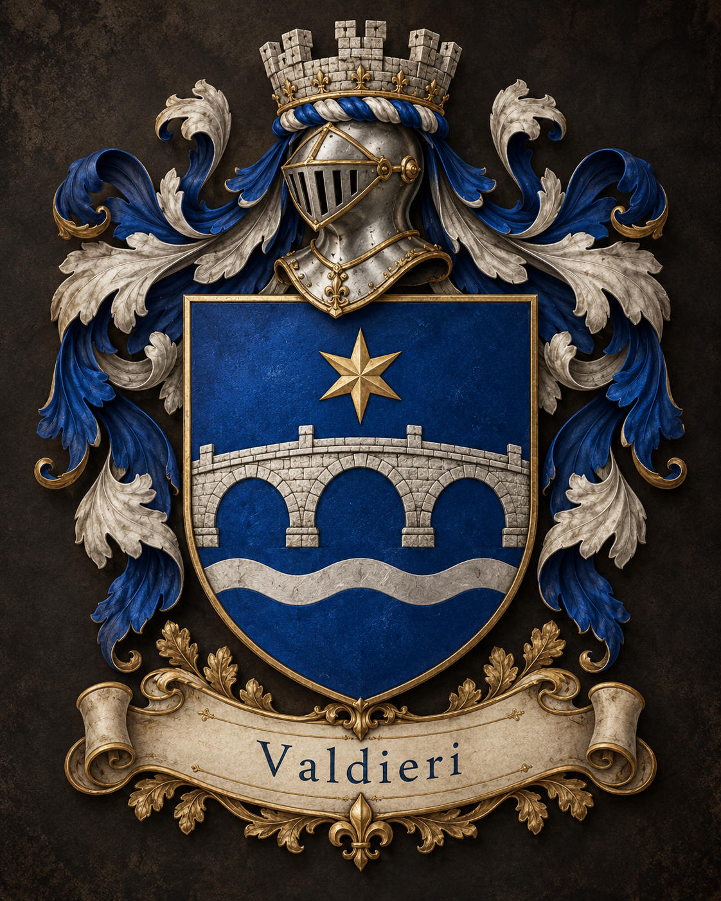
House Valdieri · approved 2026 heraldic artwork · motto not established
Canon boundary: House Valdieri is one of the eleven recognized Great Houses in 2026 and regained that rank in 2023 after demotion to Major House following its 1934–1946 civil war. It is substantially the weakest Great House by resources, yet a formal peer; its historic international Council mandate was lost to Ravenscroft and has not returned. Lorenzo Vittorio Valdieri is Head, with the senior family, seven-seat internal Council, institutions, estates, ownership bands, four regional Major Houses, five Lesser Houses, officeholders and House reporting rules now established. Still developing: exact Tribunal and Council dates, narrow regional charter lines, exceptional review arrangements involving Lorenzo, particular corporate equity allocations, while the planned nine image batches are all approved and installed. Giulia's separate Ravenscroft-styled primary Master B portrait and several individual character dossiers are still outstanding; these are distinct from the completed Valdieri image batch program. The proposed maxim is not an approved House motto; do not treat genuinely open details as canon.
RecognitionRestored 2023 · weakest of eleven Great Houses
Dynastic CorePiedmont, Italy
Working Administrative CenterMilan
CouncilFormer mandate · displaced by Ravenscroft
2026 HeadLorenzo Vittorio Valdieri · born 1962
01
House Identity
Core identity establishedPrincipal SeatRocca delle Fonti · Gesso valley, Piedmont · established
Commercial FocusMilan · Genoa · regional industrial and cultural institutions
Defining StrengthPatient capital and durable institutional ownership
Defining VulnerabilityScarred by civil war, decades of degraded status, and fragile post-restoration institutions
Public PresentationDiscreet multi-generational Italian holdings, operating businesses, cultural foundations
Strategic DoctrinePreserve the asset; understand the obligation; survive the crisis
Nature of power
Valdieri does not merely provide finance. Its distinguishing skill is making real institutions operable across generations. The House acquires difficult assets when patient capital and technical competence matter, then embeds legal, professional, human and physical continuity into them. Productive industrial facilities, specialized manufacturers, logistics-adjacent properties, archives, real estate, research enterprises and cultural institutions form a diversified base that survives beyond investment fashions.
A useful distinction
Wycliffe concentrates on institutions and public continuity; Veyrholm on passage and information; Falkenrath on land, engineering and disciplined governance. Valdieri's lane is contractual architecture and long-horizon stewardship: which commitments remain enforceable, which institution can finance repairs, who bears a loss when collateral fails, and who can rebuild an operation without inheriting another House's authority.
02
Great-House Qualification
Established peer standard · supporting details developingThe threshold: Valdieri passed the full peer-qualification test when it was recently restored, but only just. No recognized Great House has less combined reserve capacity, international reach and institutional resilience. Its historic Council prestige does not relax the standard, and a second collapse could again prompt degradation.
03
Historical Development
Provisional narrative · dates subject to reviewAn independent lineage emerges in the southern Alpine foothills of Piedmont among estate-holders, merchants and administrators involved in mountain crossings, craft production, storage and secured obligations. Avoid claims of ancient Roman patrician descent without evidence; the medieval family must be independently credible in its own right.
The family builds its first long-lived private registers, retained professional staff and rural estates. Northern Italian city markets and the Ligurian coast allow the House to extend beyond any one ruler's jurisdiction. Here the House first learns that a ledger is only useful when matched to a enforceable obligation, a protected asset and dependable people.
Commercial and administrative relationships across Piedmont, Genoa and northern Italy broaden into independent capital pools, specialty manufacture and controlled estates. Its future Great-House recognition must be tied to demonstrated sovereign institutions and decades of tested succession—not simply success at banking.
Valdieri spreads ownership across rural estates, productive workshops, commercial urban property, specialized production, and partnerships whose managers can remain effective without daily family supervision. The emerging doctrine is that good holdings require engineers, accountants, craftspeople and loyal stewards, not merely hereditary claimants.
Regime upheaval, requisition, territorial change and the disruption of older legal forms threaten the family's resources. The proposed defining adaptation is documentation redundancy and parallel operating structures—not miraculous immunity to war or government seizure.
Legal and political consolidation creates both risk and opportunity. The House reshapes its estates and industrial holdings to function under the modern Italian state while continuing to distinguish public legality from private constitutional authority.
Wartime disruption shakes Valdieri's continental obligations, enterprises and alliances. The early war damage exposes existing rivalries within its senior line and cadet branches, setting the conditions for a later succession struggle.
Disputes over succession, autonomy and the burden of obligations escalate toward an internal House conflict. This fracture is rooted in genuine Valdieri disagreements, not invented wholly by its opponents. A rising House Ravenscroft quietly studies and exploits these weaknesses.
Political upheaval, occupation and wartime destruction compound Valdieri's dynastic struggle. Rival cadet factions and senior claimants dispute authority. Ravenscroft exercises concealed economic, political and covert pressure through intermediaries amid events that appear to be consequences of Europe's wider crisis. Valdieri does not recognize an organized Ravenscroft campaign at the time.
Valdieri emerges from its dynastic war unable to satisfy the constitutional requirements of independent sovereign peerage. The Order formally strips its Great-House status and recognizes it as a Major House. Its Conclave Voice ends with degradation. Independently, the International Council mandate it once held passes to Ravenscroft during its postwar ascent through the Order's proper process. The precise dates and ordering of the election and degradation are still undecided.
Holdings in Italian industrial and property markets evolve into Mediterranean and wider European relationships. Valdieri gains influence through minority holdings, operating partnerships and patient reinvestment, while avoiding the trap of becoming a single multinational corporation.
Valdieri loses its Conclave Voice, Council privileges and standing as a sovereign peer. Generations attempt to restore independent security, family unity, succession legitimacy, resources and institutional confidence. While a Major House, it cannot simply run for a Council seat; its constitutional goal is renewed Great-House recognition. Fragments of evidence may suggest outside orchestration of its wartime collapse, but Ravenscroft's campaign is not conclusively known within Valdieri.
Following a successful examination of its independent sovereignty, succession, institutions, resources, security, networks and Compact reliability, Valdieri is readmitted to the Great-House peerage. Its Head regains a Conclave Voice. The House does not receive its former Council seat, and its recent restoration ordinarily entails a twenty-one-year maturation period before it can contest one of the Nine mandates. The restoration year is established as 2023. Any exceptional constitutional terms remain unassigned.
Valdieri once again possesses full formal Great-House recognition and one Conclave Voice but has not regained the Council mandate lost to Ravenscroft. Its powers, wealth, personnel, security redundancies and international leverage are by far the least substantial among the eleven recognized peers. It satisfies the constitutional minimum; it is not treated as a lesser constitutional rank within the Great-House peerage. The 2023 restoration was secured under Head Lorenzo Vittorio Valdieri; financial figures and the precise ruling date remain open.
03A
The Valdieri Dynastic Civil War
Leaders and general dates locked · individual killings unresolved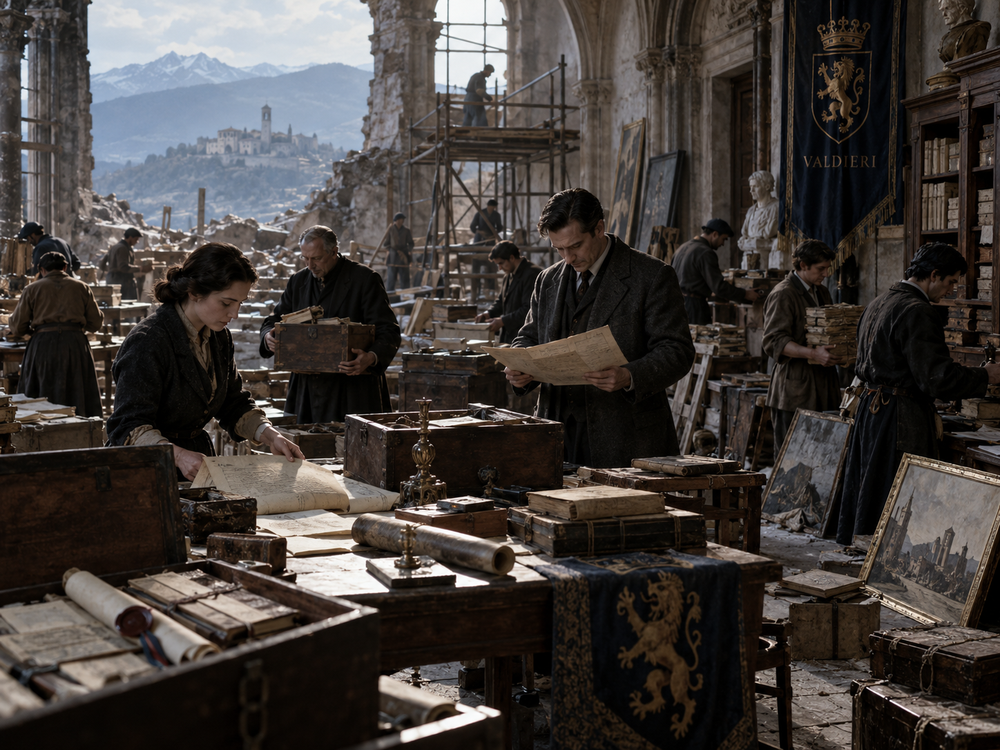
The struggle resembled the Wars of the Roses. Valdieri di Monferrato initiated the succession crisis: its leaders rejected the principal family's governing practices and the designated heir, and sought to escape cadet status and establish an autonomous Great House. Monferrato was neither a weak dissident household nor a hopeless rebellion. It commanded serious resources, retained its own institutions and loyal supporters, and attracted a second cadet branch's leadership to its cause. Together the insurgents had a credible chance of defeating the principal line, capturing effective House command or gaining enough independence to seek future constitutional recognition. Their belief in victory must be supported by the eventual financial, territorial, security and patronage record; specific proportions have not yet been approved.
The established alignments
Monferrato leads the rebellion under Cesare Ludovico and Umberto Cesare. The commercially influential di Genova branch, under Raffaele Benedetto, backs the rebels for greater commercial autonomy and branch influence. Di Canavese, led by Adelaide Teresa, first preserves neutrality and then assists the senior line. The resulting coalition gives Monferrato a credible chance of military, economic and institutional victory, not merely a rhetorical grievance.
A family destroying itself
Fighting lasts years, with killings carried out by rival family commands, secretly sympathetic insiders and independent Ravenscroft interests. Some deaths remove competing claimants or strategic household personnel; others provoke suspicion. Branch leaders become paranoid and condemn even uninvolved relatives. The world wars magnify factional isolation and permit outsiders to intervene unnoticed. Ravenscroft works covertly across multiple layers of governance, resources, security, archives and alliance networks; even senior Valdieri survivors cannot consistently tell its operations from internal betrayals.
Extinction of the Monferrato bloodline
Monferrato's rebellion ends with the complete destruction of its bloodline, leaving no descendants of any age. After the senior family prevails, the cadet House ceases to exist and its assets and institutions are absorbed into the principal line. There are no hidden Monferrato survivors or disguised branches.
Knowledge and historical memory
The official record treats Monferrato as a destroyed bloodline, not a concealed cadet family. Later descendants of Valdieri learn about the rebellion during Order formation, but the archives are incomplete on many individual deaths and the concealed actions of Ravenscroft. The children raised within the principal household came from the separate surviving branch that supported the rebellion, not from Monferrato.
The Genova wardship settlement
The postwar political wards came from di Genova, never extinct Monferrato. Their established settlement kept them within the senior household until approximately ages 21–23, with increasing contact with their birth branch from adolescence and formal adult return through the Atto di Rientro. Read the established Genova wardship-and-return record. The individual children's names, later careers and outcomes remain intentionally unassigned.
The surviving rebel ally
Leadership of the surviving branch that supported Monferrato is censured and ordered to pay restitution. Some children are placed within the principal Valdieri household as family wards: publicly kin welcomed and educated with the senior family, privately assurances of their branch's continued compliance. They may receive strong educations and later ordinary professional roles that serve the wider House, while access to sensitive information and positions remains constrained. The individual children's eventual lives and specific appointments are intentionally undescribed.
Victory that costs the peerage
The principal line ends the rebellion but its combined institutional losses are so severe that Valdieri is formally degraded to Major House after the war. Ravenscroft takes its old Council mandate through the Order's separate constitutional process. The dynasty spends decades rebuilding and regains Great-House status only in 2023, remaining substantially weaker than its peers in 2026.
Established: Monferrato began the rebellion under Cesare Ludovico and Umberto Cesare; Genova under Raffaele Benedetto supported it; Canavese under Adelaide Teresa began neutral and later supported the senior family. The war lasted 1934–1946. Monferrato's entire bloodline was extinguished, without hidden descendants. Genova faced censure, restitution, and children raised as political wards; no individual life paths have been assigned to them. The 1953–1956 Articles of Dynastic Continuity are established postwar law. Still open: exact dates of the postwar degradation and separate international Council vote, individual killings, and precise historical branch holdings; the modern cadet Heads and their 2026 families are established.
Cadet loyalty after the civil war
The postwar senior household raised selected children of the censured Genova cadet, not Monferrato, whose entire bloodline is extinct. Under the historical Genova settlement, the children normally remained affiliated with the senior household until around ages 21–23, with increasing contact with their birth branch from the mid-teens. The Atto di Rientro formally ended residential guardianship and confirmed the adult return to the Genova line. Individual wards' names, adult careers and later lives remain intentionally undescribed. Alongside the publicly recognized Articles of Dynastic Continuity, other Great Houses cultivated their own unwritten cadet-loyalty practices; those varied customs are world canon, not a universal second Compact. See the detailed Genova settlement and quiet House customs.
Constitutional aftermath and new development
The Articles of Dynastic Continuity (1953–1956) make the Valdieri war a precedent across the Great Houses without erasing House sovereignty or independent cadet accession rights. Read the locked 2026 Genova and Canavese family canon; the six named modern cadet relatives and their established birth years and roles are approved, while specific unstated marriage links, exact birthdays and individual wartime-ward descendants remain open.
Confirmed leaders and continuity settlement
Vittorio Carlo Valdieri (1875–1934) consolidated House stewardship in 1922–1930 and confirmed his son Alessandro Vittorio (1903–1944) as successor. Cesare Ludovico Valdieri di Monferrato (1883–1946) challenged those changes with the backing of his son Umberto (1911–1945), Raffaele Benedetto of Genova (1887–1964), and a wider rebel coalition. Adelaide Teresa of Canavese (1892–1973) later supported the principal family. The war lasted from 1934 to 1946. The Conclave's 1953–1956 Articles of Dynastic Continuity subsequently established minimum safeguards for succession continuity and cadet charters across the Order. Read the locked historical study. Exact Council election and Tribunal-degradation dates remain open.
04
Geography & Influence
Core seats and regional mandates established · wider ties developing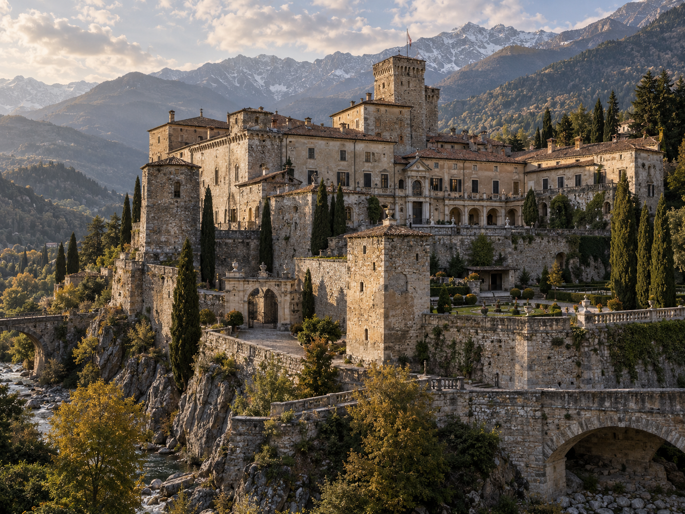
Historic core
Piedmont and the Alpine approaches anchor the House's historical land and records. Rocca delle Fonti, in the Gesso valley, is the principal constitutional seat, while Palazzo Valdieri in Milan is the established working and commercial center. Genoa connects the senior House to the separately owned Genova cadet network and other independent maritime counterparties. These are differentiated roles, not three equivalent seats.
Deep and overlapping networks
Other northern Italian industrial regions, southern Switzerland, selected French and Mediterranean commercial centers, and specialist cultural organizations constitute plausible deeper ties. Overlap with Falkenrath, Wycliffe, Veyrholm and Mediterranean-based dynasties should be explicit rather than mapped as exclusive Valdieri possession.
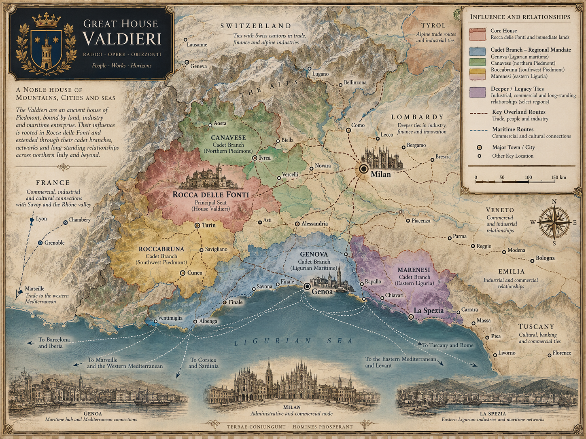
05
Institutional & Economic Power
Distinct from generic bankingOperating Companies
Patient ownership in specialty manufacturers, precision production, industrial repair, packaging, advanced components and regional businesses with defensible technical skills.
Estate & Property Stewardship
Maintained rural estates and adaptive reuse of strategically located urban properties, productive infrastructure, historical buildings and professional workspaces.
Long-Horizon Capital
Reserves and investment vehicles designed to sustain complex acquisitions and vulnerable enterprises during long restructuring cycles.
Archives & Documentation
Secure title, obligation and lineage registers that establish who can act and who remains responsible decades after a transaction.
Culture & Restoration
Specialist conservation workshops, historic preservation programs, instrument makers, libraries, museums and cultural patrimony with real public purposes.
Technical & Human Capital
Long-lasting professional relationships with operators, engineers, designers, archivists, conservators, directors and their successors.
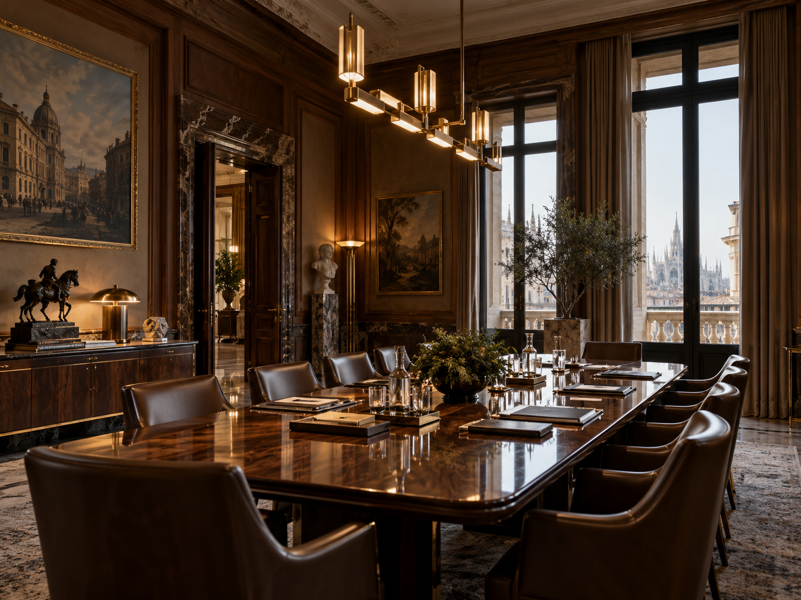
Counterweight to wealth
Capital is not a universal substitute for engineering competence, physical access, intelligence or personal loyalty. This principle should be central to the House's weaknesses as well as its strengths.
06
The Order & Long Peace
What the House supplies
Valdieri can stabilize endangered institutions, finance protected relocations and reconstruction, shelter professional networks through regime disruption, and create transparent-on-paper lawful ownership structures for legitimate public business while discreetly separating the private responsibilities of the Order.
Limits of authority
The restored Head has a Conclave Voice and full legal peer equality, but no current mandate among the Nine. During the decades of Major House status, Valdieri held neither privilege. The standard twenty-one-year good-standing maturation rule applies to newly recognized Houses; with restoration in 2023, the ordinary maturation rule points to 2044 as the first eligible Council contest, unless an explicit reinstatement exception is established. Valdieri does not inherit the Council seat now held by Ravenscroft.
07
Inter-House Relations
Ravenscroft dynastic marriage; other alignments developingWycliffe & Falkenrath
Valdieri competes and cooperates with Wycliffe in long-lived institutions, governance and trusts. Falkenrath brings industrial engineering and Central European estates, creating plausible joint ventures as well as disputes over control, technical independence and the proper valuation of legacy businesses.
Veyrholm, Ravenscroft & Mediterranean Peers
Veyrholm controls routes and logistics relationships Valdieri cannot assume it owns. The 2026 marriage of Giulia Caterina Valdieri to Elias Alexander Ravenscroft gives Valdieri a genuine alliance with the preeminent House but on asymmetrical terms. Beyond its public social benefits, senior leadership on both sides understands Giulia's presence as an implicit guarantee of continued cooperation and alignment. It is never formally designated a hostage arrangement: she is an adult spouse with personal rights, and Elias neither controls Valdieri nor knows the hidden wartime history. Mediterranean peers create competition in property, reconstruction and investment; other alliances remain open.
08
Governance & Constitutional Representation
Seven-seat House council establishedHead of HouseLorenzo Vittorio Valdieri · born 1962 · age 64
Conclave VoiceHeld by the Head when designated
Standing Conclave DelegateNot yet named
Alternate DelegateNot yet named
Nine-seat CouncilFormer seat taken by Ravenscroft · not regained
Councilor / DeputyNot applicable without current mandate
SuccessionMatteo first; Chiara second since Giulia's renunciation
Family CouncilSeven-seat Consiglio di Casa Valdieri
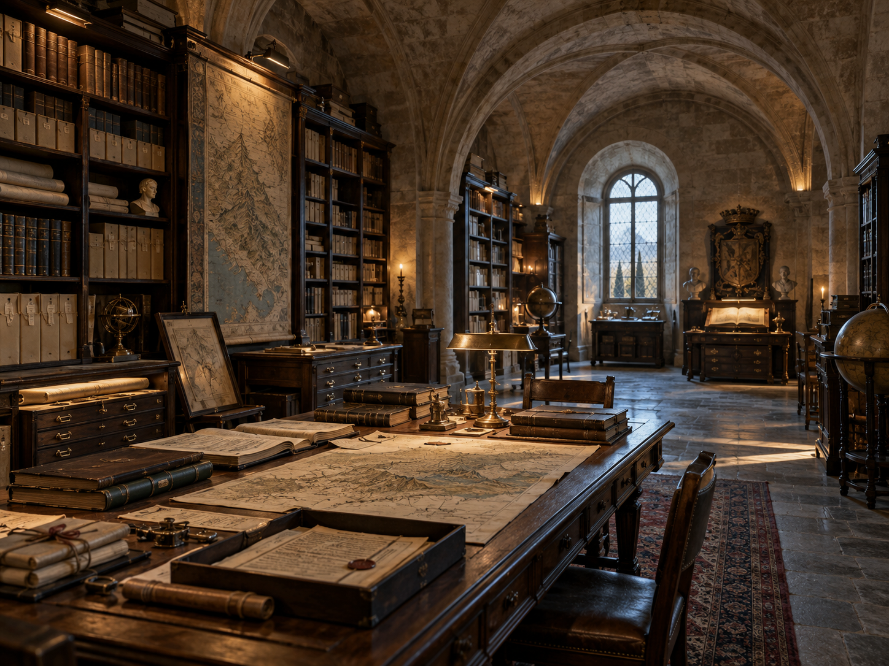
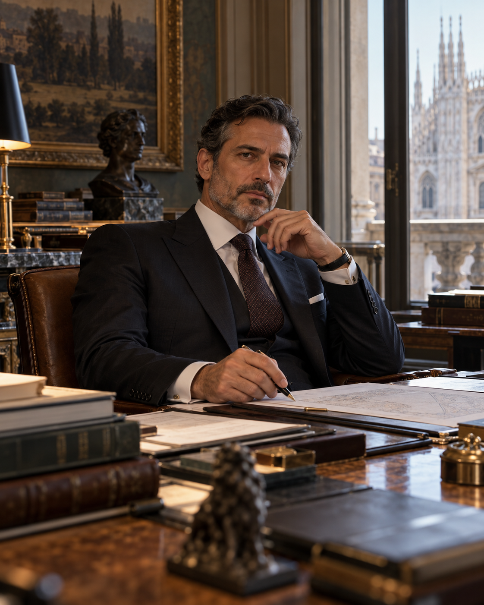
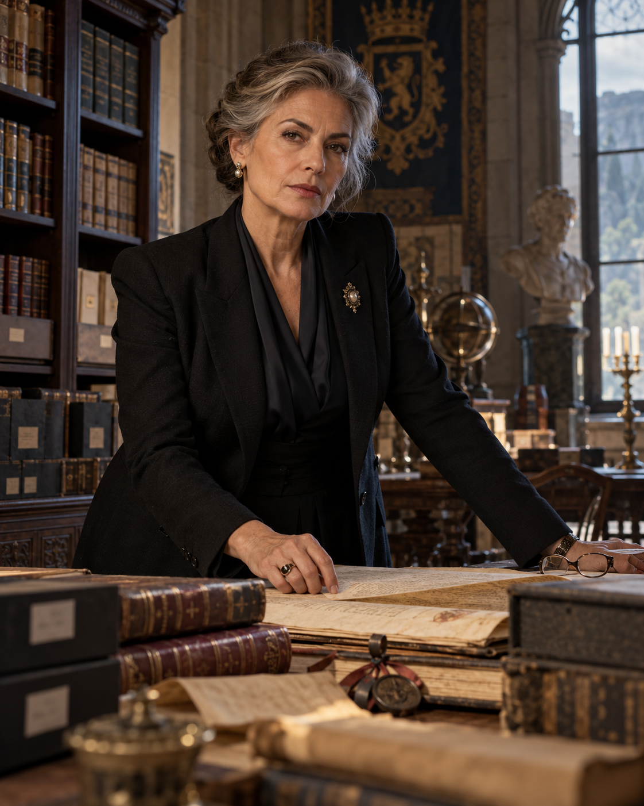
Separate rights and offices
Valdieri differentiates constitutional succession, ownership and beneficial interests, and entrusted obligations. A member can hold an enterprise or foundation warrant without thereby becoming Head. Giulia and descendants through her have renounced succession; Elias Ravenscroft acquires no Valdieri authority. The seven-seat Consiglio di Casa Valdieri has Lorenzo as Head, Matteo as heir, Dr. Elena as appointed senior consort, the Heads of di Genova and di Canavese, and the appointed Steward of Assets Dr. Riccardo Leone Ferrante and Warden of Constitutional Continuity Avv. Dr. Teresa Maddalena Bellandi. The council advises and exercises chartered powers but remains distinct from the nine-seat International Council.
Seven-seat House Council
The internal Consiglio di Casa Valdieri consists of Lorenzo (Head), Matteo (heir), Elena (appointed senior consort), Claudia di Genova (cadet Head), Tommaso di Canavese (cadet Head), and Dr. Riccardo Leone Ferrante (Steward of Assets) and Avv. Dr. Teresa Maddalena Bellandi (Warden of Constitutional Continuity). Routine recommendations require a simple majority. Protected structural acts require five of seven votes plus lawful Head concurrence under the House charter. This body does not create a second Conclave Voice or any Council seat among the international Nine.
Ratified stewardship and continuity offices
The Steward of Assets (Sovrintendente al Patrimonio) supervises principal House treasury policy, House-common capital, ownership registers, major commitments and financial resilience while respecting independently owned cadet assets, charitable property and competent business boards. The Warden of Constitutional Continuity (Custode della Continuità) authenticates House succession, regency, cadet charters, restorations, official instruments and protected archives; this office certifies existing authority but cannot choose the successor or rewrite the lawful lineage. These two council seats, their functional charters and incumbents are established: Dr. Riccardo Leone Ferrante (b. February 16, 1970), a capital-risk specialist, and Avv. Dr. Teresa Maddalena Bellandi (b. November 4, 1963), a legal historian and archival specialist. Both are non-Valdieri-blood professional appointees, sworn after the Great-House restoration in 2023; exact dates remain open. Read their approved officeholder profiles.
The Council-seat wound
The postwar loss to Ravenscroft became bound to an even greater humiliation: generations in which Valdieri was no Great House at all. A surviving branch that supported Monferrato was censured and compelled to give children into the senior household as de facto political wards, outwardly welcomed as family. This historical example of kinship serving as a guarantee has an understated modern echo in Giulia's politically necessary Ravenscroft marriage. Having recently won recognition again, one faction dreams of returning to the Nine while others prioritize preserving independence. The concealed Ravenscroft campaign is not generally known, and old branch distrust has not disappeared.
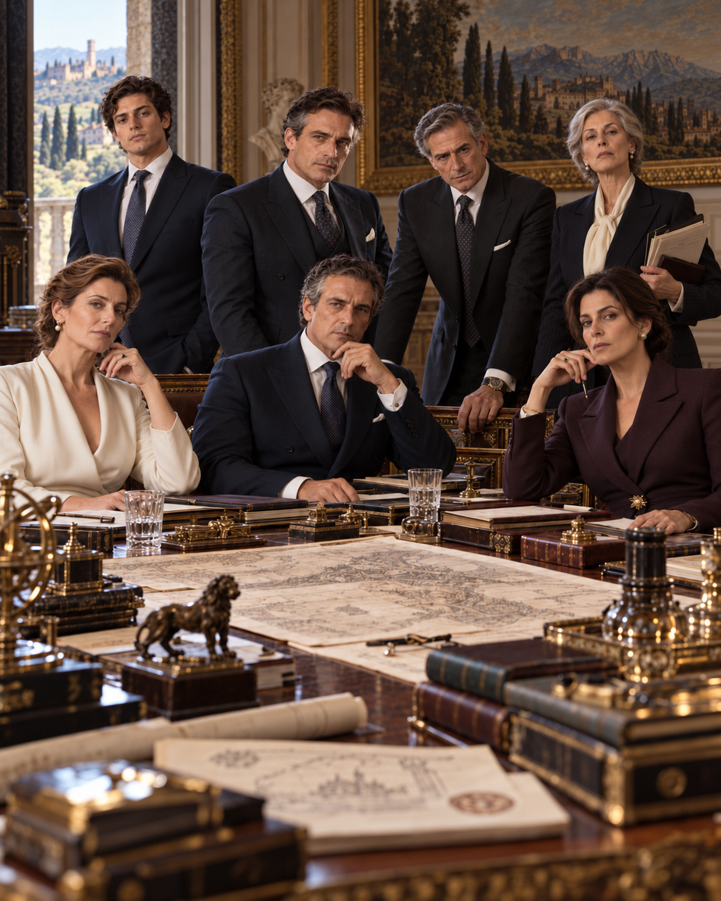
09
Senior Family & Cadet Branches
2026 principal and surviving cadet households locked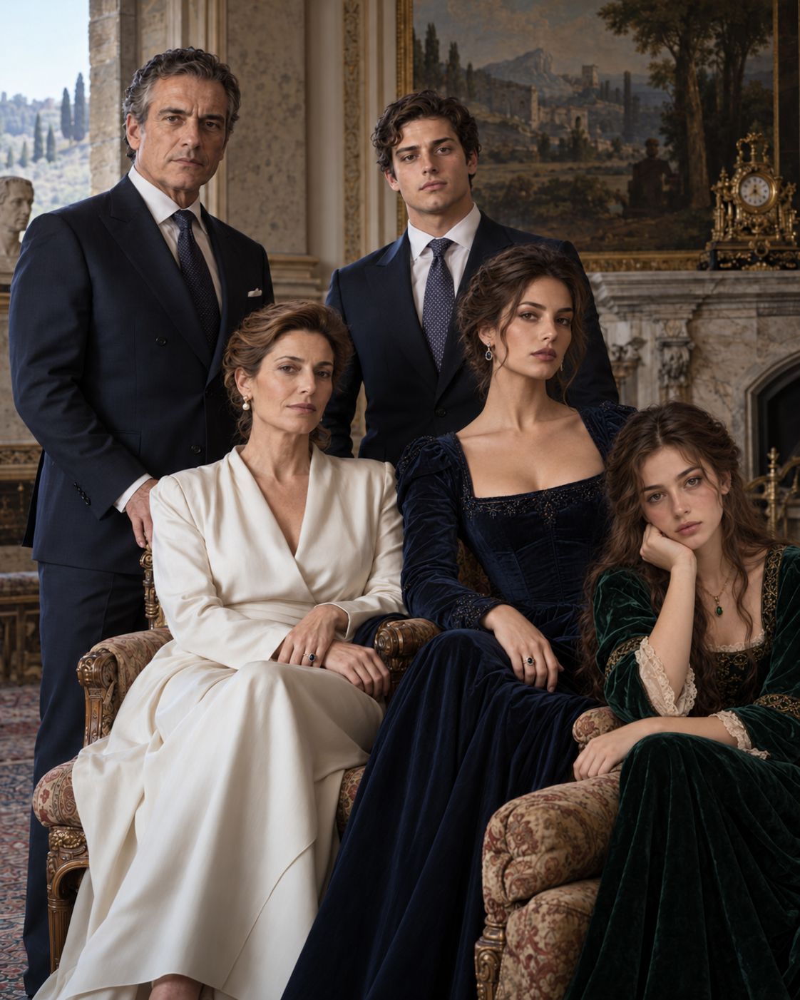
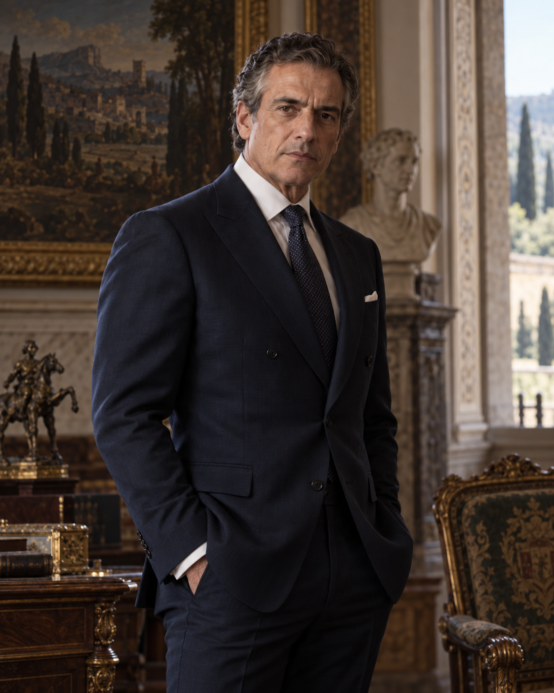
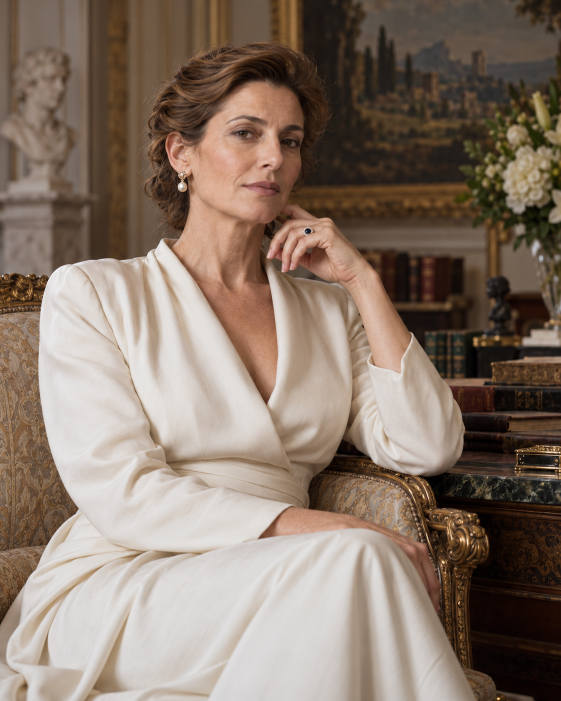
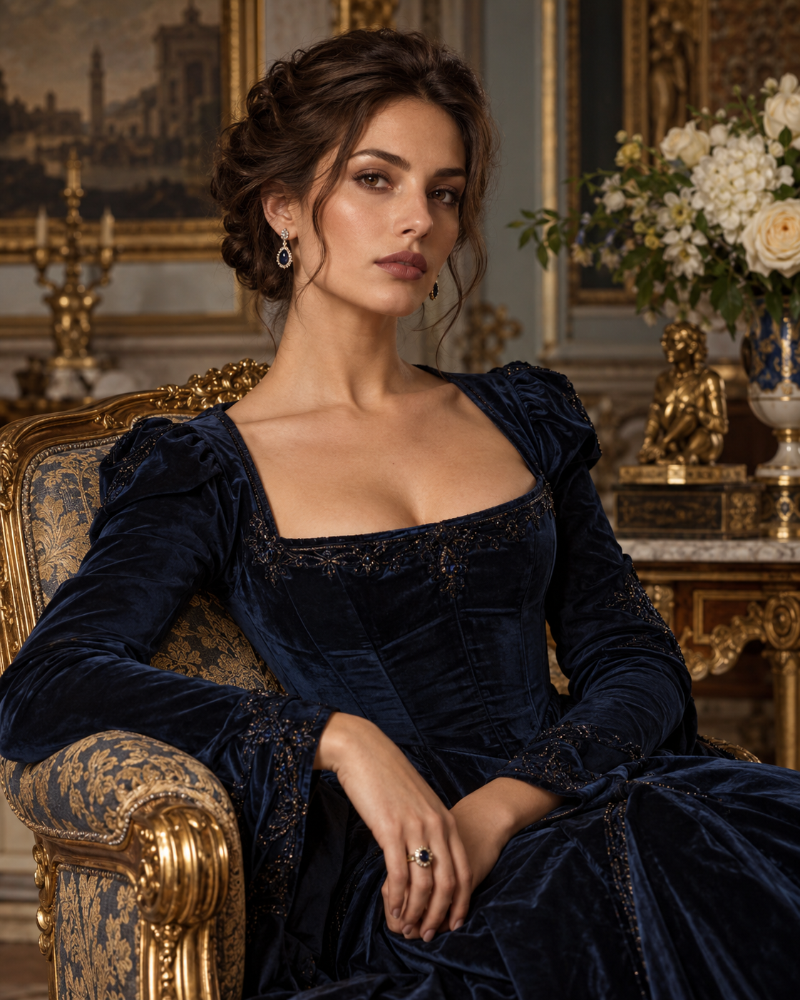

HeadLorenzo Vittorio Valdieri · born 1962 · 64; appears approximately 55–58
ConsortDr. Elena Beatrice Montanari Valdieri · born 1968 · 58; appears approximately 53–56
HeirMatteo Lorenzo Valdieri · born 1996 · 30 · industrial engineer and executive
Daughter by birthGiulia Caterina Valdieri · born 2004 · 22; now married to Elias Ravenscroft
Second successorChiara Elisabetta Valdieri · born 2008 · 18; mathematics, physics and astronomy
Restoration2023 · achieved during Lorenzo's Headship
Lorenzo and Elena
Lorenzo grew up in the diminished Major House and became Head in the late 1990s, aged approximately 35–38. Disciplined, proud and strategically cautious, he devoted his career to re-establishing independent governance, security, resources and credible succession. The 2023 restoration is the defining achievement of his Headship. His desire to protect that victory can outweigh the wishes of individual relatives. Elena, born to a prosperous northern Italian professional rather than Great-House blood family, married him before re-elevation was assured. A physician with hospital-administration and medical-research experience, she helped rebuild independent professional institutions and urges a more humane balance between duty and personal agency.
Three children, two successors
Matteo is a technically competent, reform-minded industrial engineer active in Valdieri's manufacturing interests; he favors institutional reliability over prestige-driven attempts to regain the Nine. Giulia, previously second in succession, married Elias Alexander Ravenscroft in 2026 and renounced Headship eligibility for herself and her descendants as part of the unequal alliance. Chiara, previously third and now second, is an intellectually curious young woman interested in mathematics, physics and astronomy; she has reached the initial age of induction but has not yet completed the advanced formation associated with age twenty-one. Each child has individual aspirations beyond the House.
Historical Direct Line
Vittorio Carlo Valdieri (1875–1934) → Alessandro Vittorio Valdieri (1903–1944), married to Beatrice Elena Ferretti Valdieri (1908–1997) → Marcello Alessandro Valdieri (1933–2016), married to Francesca Lucia Bardi Valdieri (1937–2019) → Lorenzo Vittorio Valdieri (born 1962). The senior line survived the civil war, rebuilding across generations before Lorenzo secured recognition in 2023.
Senior Piedmont Line
Lorenzo, Elena, Matteo, Giulia and Chiara. The restored governing line holds constitutional Headship, central archives and the principal estate. Giulia, born 2004, married Elias Alexander Ravenscroft in 2026 and renounced Valdieri succession for herself and descendants. Her full Ravenscroft Master B dossier is maintained separately from this natal-family summary.
Valdieri di Genova
The surviving maritime-commercial branch supported Monferrato under Raffaele Benedetto (1887–1964), and later suffered censure, restitution and the placement of children in the principal household. The wartime wards remain unnamed and their individual lives unassigned. Current Head: Claudia Renata Valdieri di Genova (b. 1964), chair of branch commercial investments and infrastructure interests. Her children are Federico Alessio (b. 1992), specialist medical professional, and Elisa Beatrice (b. 1998), heritage-conservation professional. Claudia represents Genova on the internal House Council; her spouse and precise genealogical relationship to Raffaele are still open.
Valdieri di Canavese
Landed and industrial cadet historically led by Adelaide Teresa (1892–1973), neutral early in the war and later supportive of the principal House. Current Head: Tommaso Enrico Valdieri di Canavese (b. 1967), engineer and manufacturing chairman. His daughter Lucia Teresa (b. 1995) works in materials science; his son Pietro Davide (b. 2001) specializes in ecology and land management. Tommaso represents Canavese on the internal House Council. The current branch's precise descent from Adelaide and Tommaso's spouse remain open.
Valdieri di Monferrato
Formerly a formidable rebel cadet, capable of seriously challenging the principal House with its resources and alliances. Its bloodline was extinguished completely, with no surviving descendants. The principal House absorbed its remaining institutions and property after the war.
Valdieri di Genova · Approved 2026 Visual Record
The three cadet relatives have locked individual appearances. Palazzo di Levante is Genova's independent Genoa estate, separate from Milan's Palazzo Valdieri. Approved Genova asset manifest.
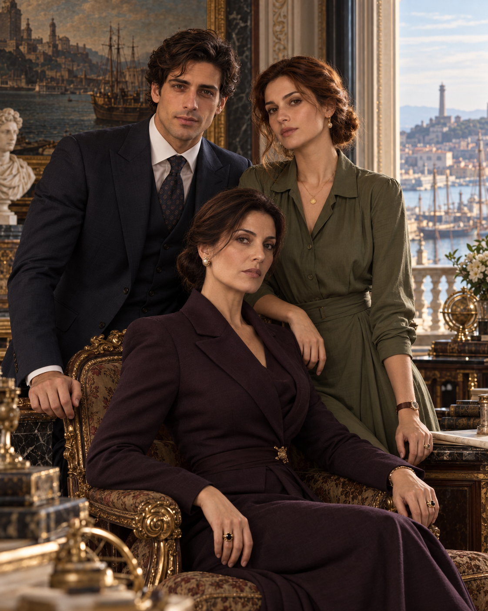
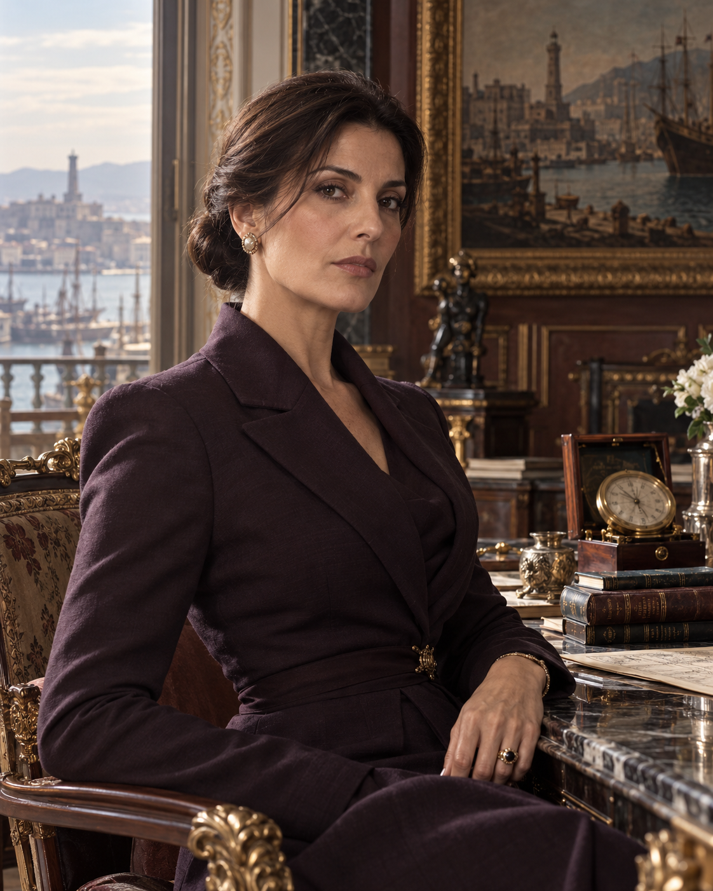
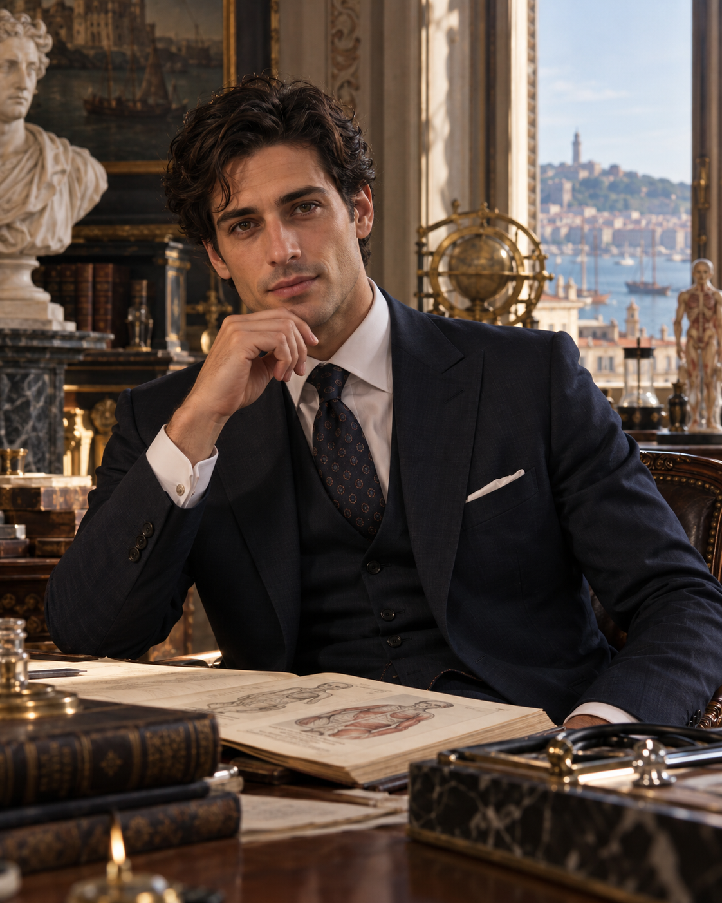
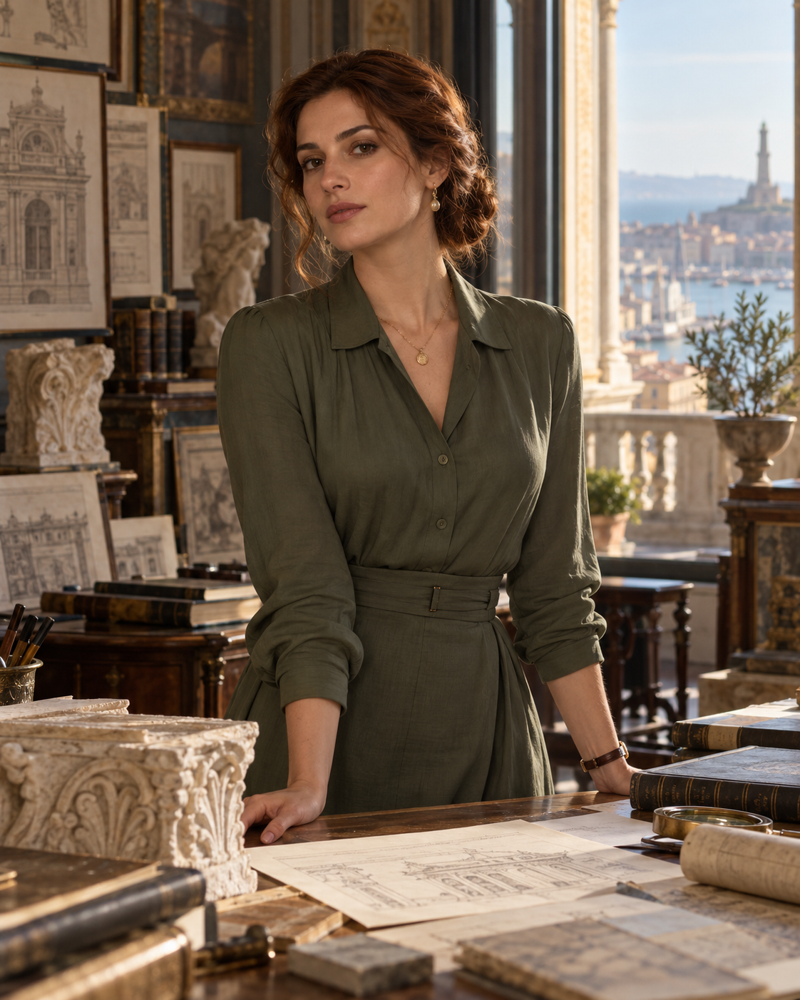
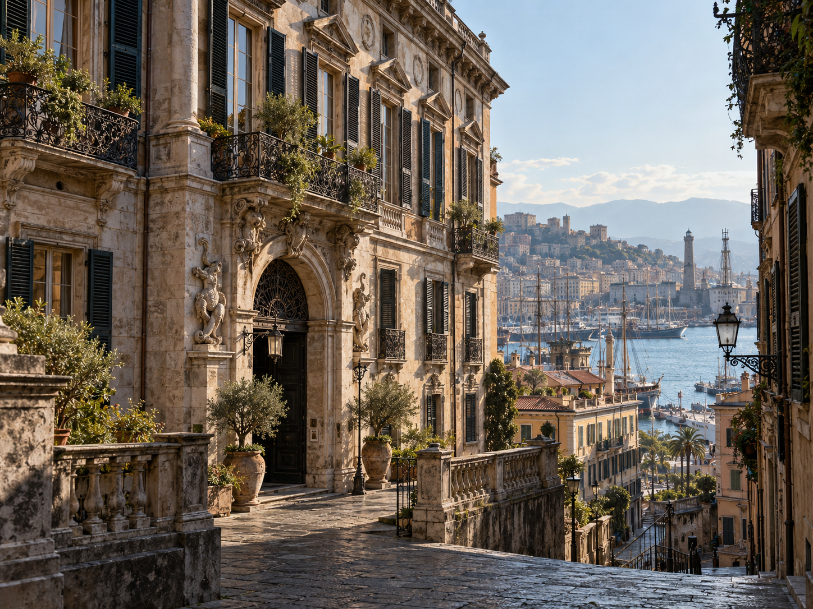
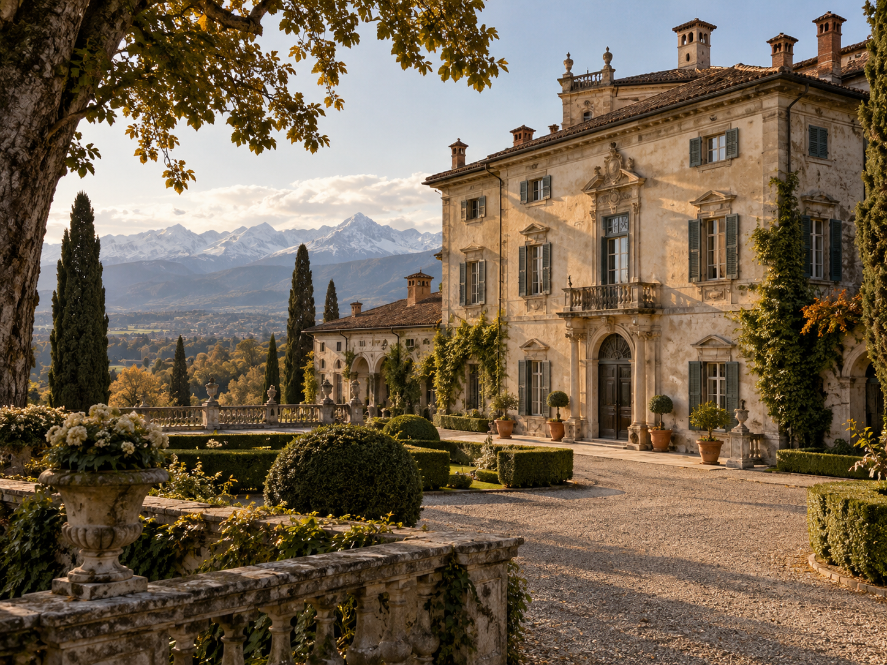
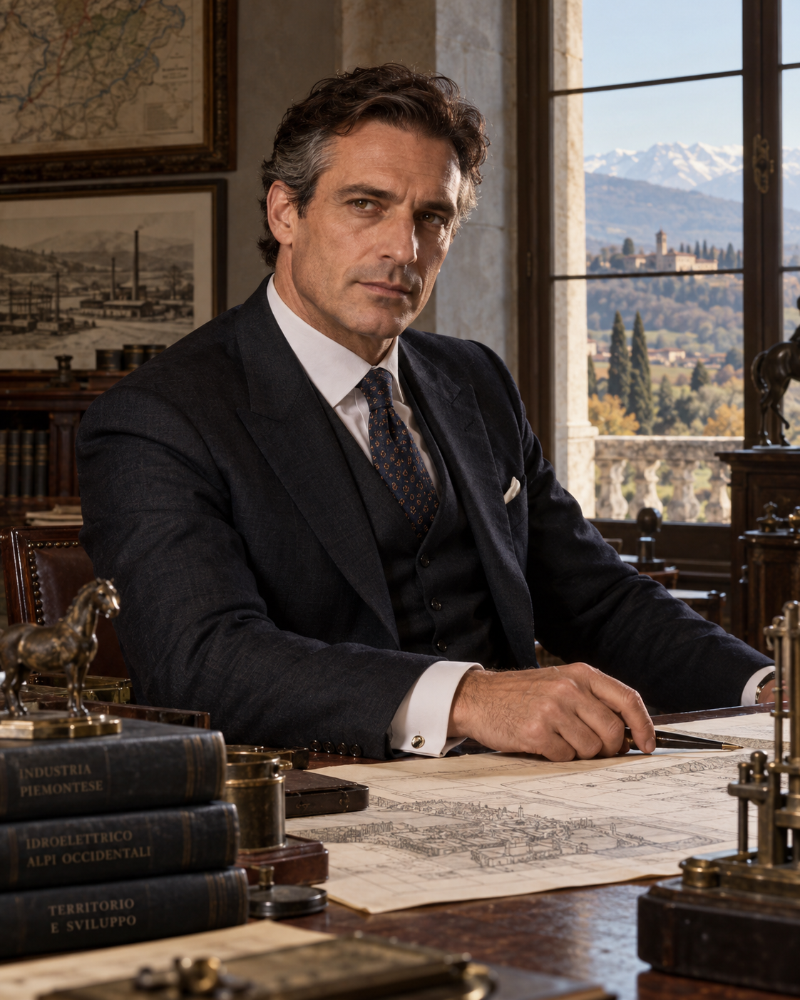
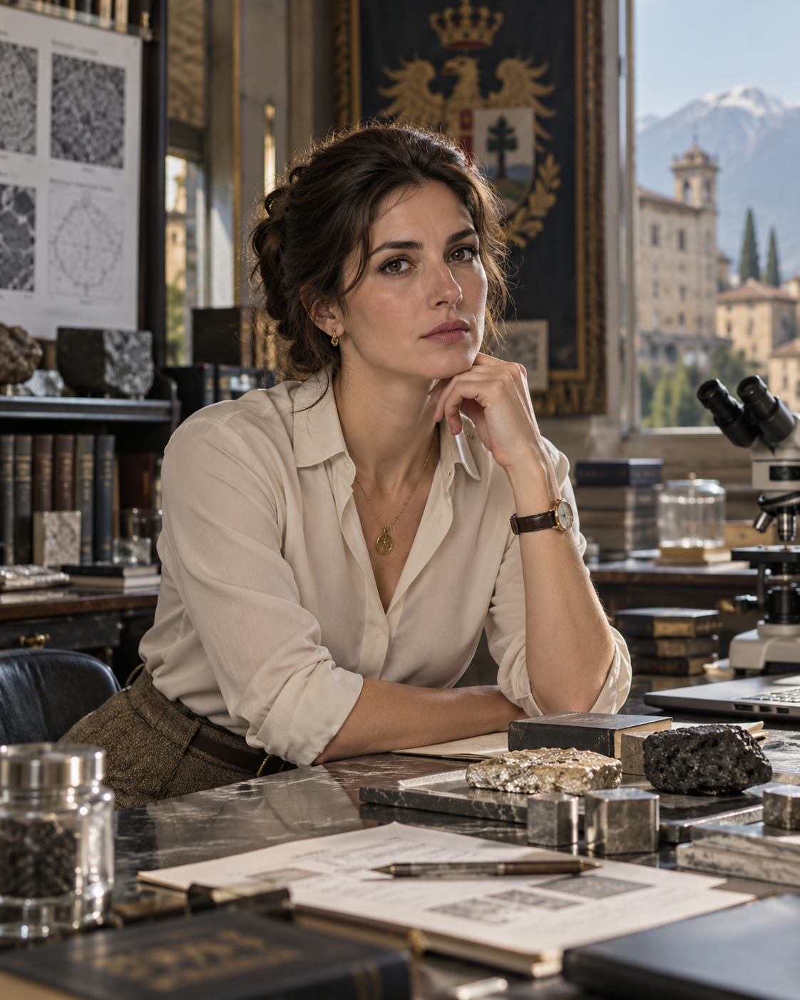
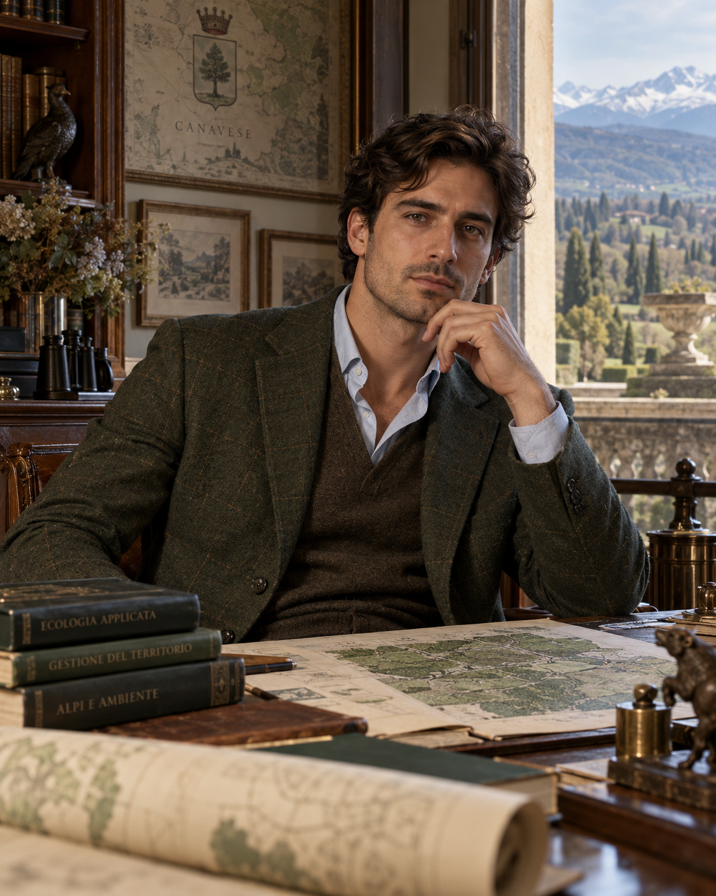

09A
Regional Major Houses and Local or Specialist Lesser Houses
Broad regional jurisdictions locked · exact boundaries developingAll four Major-standing subordinates answer directly to Great House Valdieri. Two are blood-related cadet Houses, Valdieri di Genova under Claudia and Valdieri di Canavese under Tommaso; two are distinct bound Major Houses, Roccabruna under Dr. Beatrice Ludovica Roccabruna (born 1969), and Marenesi under Giorgio Pietro Marenesi (born 1970). Their Major standing carries regional House authority; a cadet designation confers shared blood and dynastic benefits, not an additional rank between Great and Major Houses. Each Major owns its independent property and retains its internal Headship, staff and succession.
Lesser Houses provide local House jurisdiction or specialized industrial and professional services. House Belmonte d'Orta (heritage and provenance) and House Serravento (alpine estates and rural infrastructure) answer directly to the Great House. House Portelivo (port technical services) answers to Genova; Houses Valcerra (metrology and precision standards) and Boscariva (forestry and ecology) answer to Canavese. Every Lesser has its own legitimate wealth and governance. No Lesser's property is silently added to its superior's net worth.
Working regional responsibilities place Genova in the Genoa/western Ligurian commercial sphere, Marenesi in eastern Ligurian regional relationships, Canavese in northern Piedmont and Roccabruna in southwest Piedmont. These are locked broad regional mandates, with exact charter lines still to be drawn. They are not exclusive commercial territories or ownership of public governments. Milan's House offices and the Rocca delle Fonti dynastic seat remain directly administered principal-House nodes. Read the locked subordinate-House hierarchy, and read the ratified regional and specialist mandates.
Major: Genova · blood cadet
Claudia Renata; independent net worth $1–2B; Lesser Portelivo.
Major: Canavese · blood cadet
Tommaso Enrico; independent net worth $1.5–2.5B; Lesser Houses Valcerra and Boscariva.
Major: Roccabruna · bound dynasty
Dr. Beatrice Ludovica; independent net worth $500–800M; regional infrastructure engineering.
Major: Marenesi · bound dynasty
Giorgio Pietro; independent net worth $350–650M; commercial maritime risk and finance. Direct to Lorenzo, not to Claudia.
Major-House backgrounds and postwar rank continuity — locked
House Roccabruna and House Marenesi now have approved background household profiles, professional careers, dynastic seats and institutions. Roccabruna under Beatrice Ludovica includes husband Marco Davide Bellini, children Giovanni, Lucia and Pietro, and seat Villa Roccabruna near Cuneo. Marenesi under Giorgio Pietro includes wife Dr. Francesca Elena Valli, children Alessandro, Bianca and Enrico, and Palazzo delle Torri in Genoa. Both retain legally independent wealth; exact post-2023 binding dates and detailed asset allocations remain open. The approved 1946–2023 cadet-rank reconciliation establishes that the Genova and Canavese cadets maintained separate patrimony and internal governance while their externally recognized Major standing lay dormant during the senior House's demotion; their formal Major standing was restored with the Great-House restoration in 2023. This avoids constitutional Major-over-Major subordination.
House Roccabruna — approved 2026 Major-House visual record
Dr. Beatrice Ludovica Roccabruna leads an independently wealthy non-Valdieri-blood Major House, directly bound to Great House Valdieri. Her spouse Marco Davide Bellini and their three children have approved 2026 portraits. Villa Roccabruna is their own estate near Cuneo—not the senior Valdieri seat at Rocca delle Fonti. Locked Batch 6 asset manifest · Approved Roccabruna background.

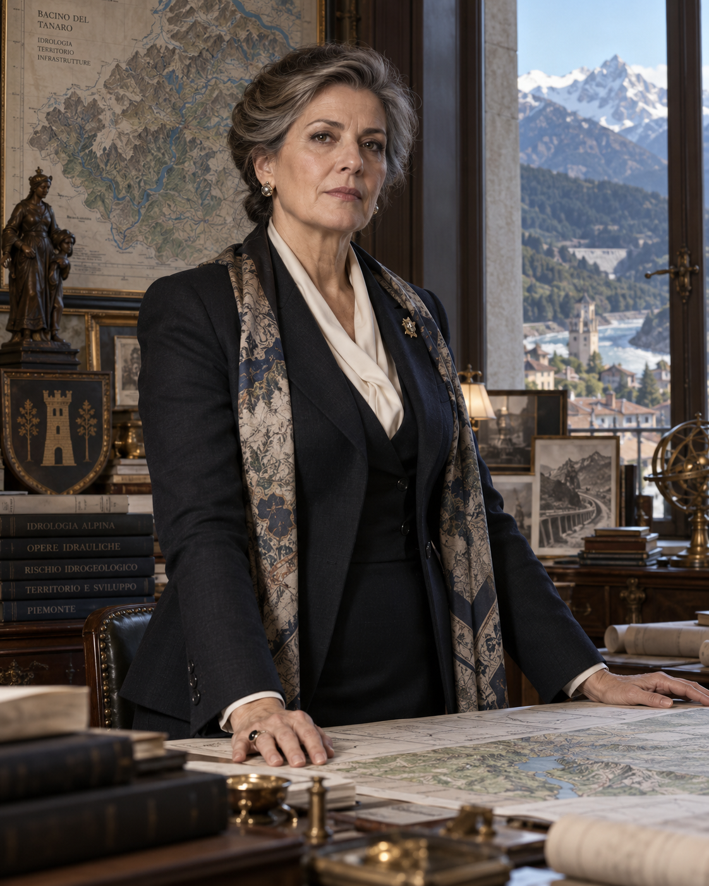

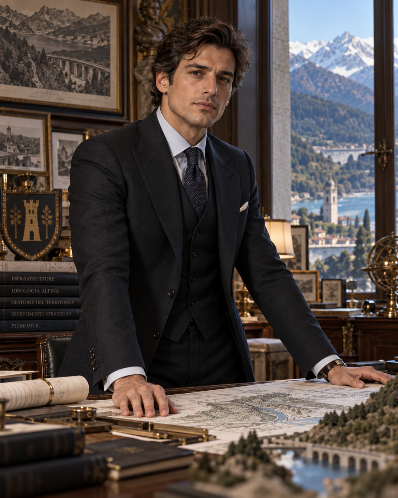


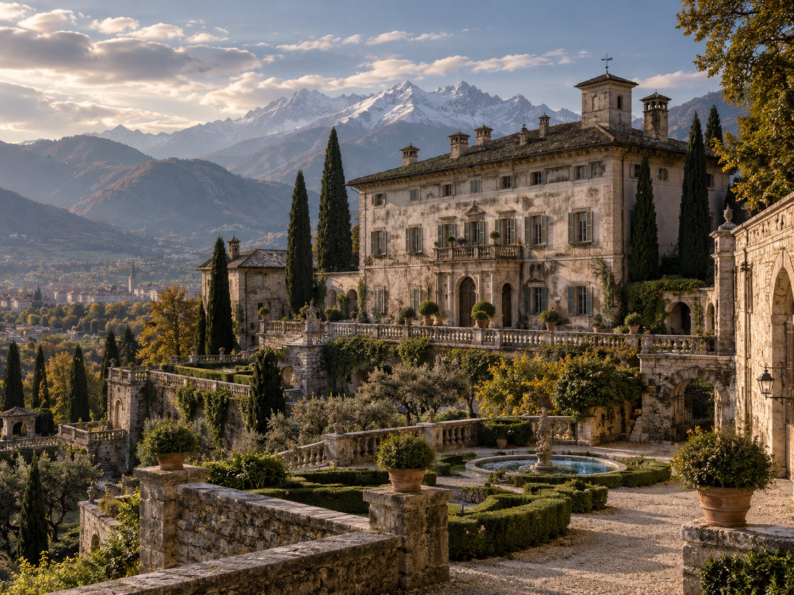
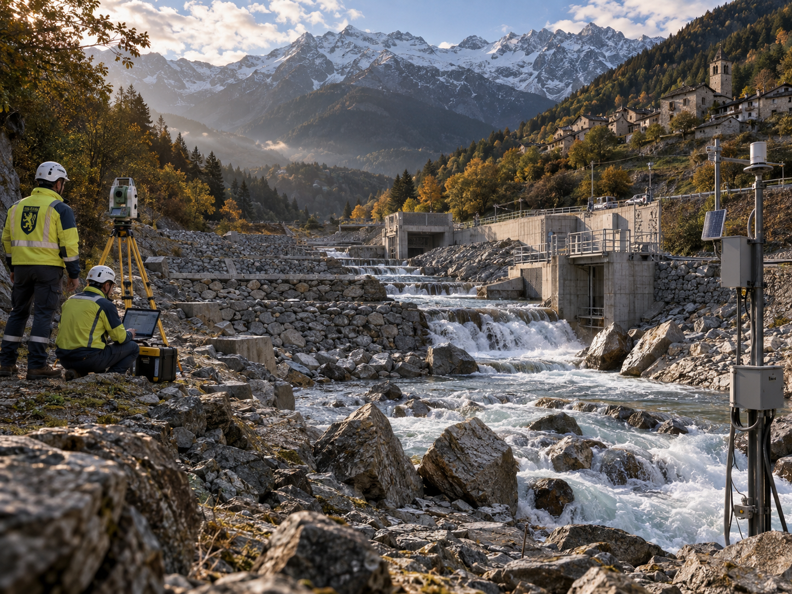
House Marenesi — approved 2026 Major-House visual record
Giorgio Pietro Marenesi leads an independently descended, non-Valdieri-blood Major House bound directly to Great House Valdieri. His spouse Dr. Francesca Elena Valli Marenesi and their three children have locked individual likenesses. Its own historic Genoese family seat, Palazzo delle Torri, is distinct from the cadet Valdieri di Genova's Palazzo di Levante. Batch 7 approved faces and image manifest · Established Marenesi background.
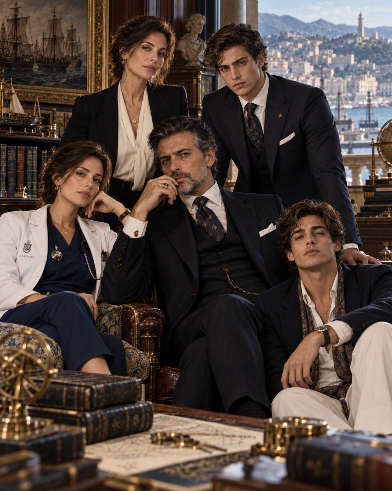

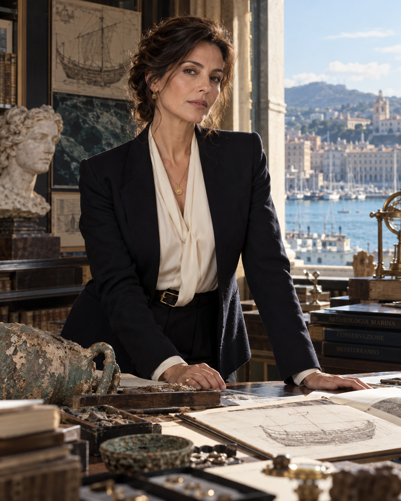


Five Lesser Houses · Approved 2026 Heads
Five distinct non-Great-House dynasties retain independent Headship, wealth and property. Direct to Great Valdieri: Belmonte d'Orta and Serravento. Under Genova Major cadet: Portelivo. Under Canavese Major cadet: Valcerra and Boscariva. All five 2026 primary portraits are approved and locked; their established charter relationships have not changed. Batch 8 face-lock and source asset manifest.
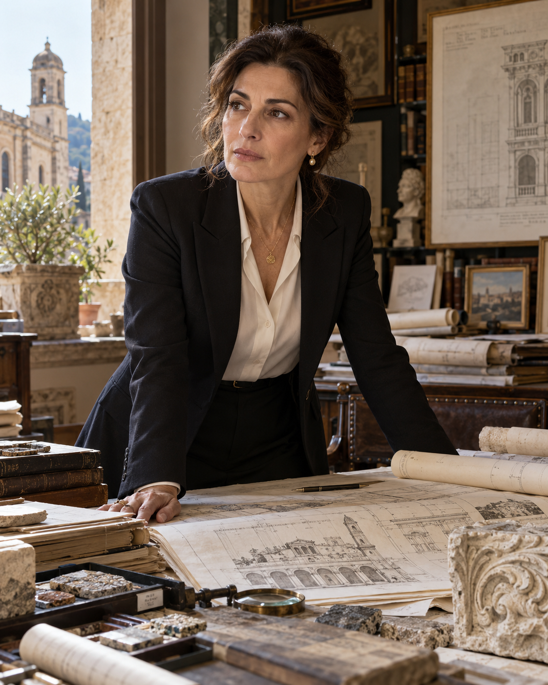
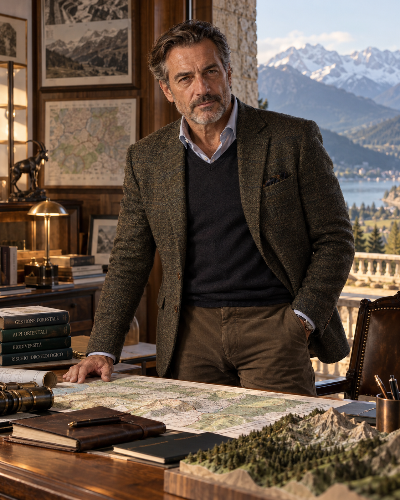


2026 regional operation and five Lesser-House Heads — locked
The four Major Heads file quarterly confidential regional memoranda directly to the principal House or its authorized receiving office, join the annual House review, and immediately escalate protected succession, Compact or charter emergencies. Regional mandates apply to protected House institutions and relations, not all ordinary civil or commercial activity inside a province. Conflicts between peer Majors proceed through voluntary consultation and then lawful referral to Lorenzo; the Warden authenticates procedure and constitutional evidence. A protected structural decision still requires five of seven Consiglio votes plus lawful Head concurrence. Read the ratified charter and appeal procedures.
Direct Great-House Lesser Heads: Dr. Lucia Agnese Belmonte (b. 1972, heritage and provenance) and Alberto Vittorio Serravento (b. 1966, Alpine estates). Genova's Lesser Head: Giovanni Elio Portelivo (b. 1971, marine surveying). Canavese's Lesser Heads: Dr. Marta Cecilia Valcerra (b. 1974, metrology and material standards) and Elena Sofia Boscariva (b. 1977, forestry and watershed ecology). All five Lesser Houses hold their own assets, internal succession and chartered professional functions; their distinct wealth is excluded from the principal Great-House and Major-House valuations.
09B
Restored Institutions and Estates
Principal and cadet holdings established · individual asset valuations developingRocca delle Fonti — principal seat
The true constitutional House seat, a restored historic fortress-palazzo in the foothills of Piedmont's Gesso valley, near Valdieri. It contains the senior household's ceremonial center and protected continuity archive. Wartime damage and subsequent repair remain part of its history.
Palazzo Valdieri — Milan
The principal House's working commercial and administrative seat, concentrating capital stewardship, legal offices and professional management without replacing Rocca delle Fonti's dynastic primacy.
Palazzo di Levante — Genova cadet
Separate property and principal cadet seat of Claudia's House Valdieri di Genova, supporting its commerce, investment, property and maritime-connected institutional relationships.
Villa della Rocchetta — Canavese cadet
Separate cadet residence and estate of House Valdieri di Canavese near Ivrea, serving Tommaso's productive land, technical and industrial network.
Senior House and shared institutional pillars
Compagnia Patrimoniale Valdieri provides senior-line capital stewardship; Officine Valdieri Group operates specialist precision industries at approximately 7–11 locations, 2,700–4,000 employees and US$1.2–1.9 billion annual revenue; Fondazione Valdieri per il Patrimonio e le Scienze Applicate supports genuine public-interest heritage, education and applied sciences; Archivio della Rocca / Ufficio della Continuità protects succession, charters and continuity records; and Consorzio Tecnico Valdieri coordinates technical education and industry through separately owned partners. The Genova cadet's own primary vehicle is Compagnia di Levante Valdieri; Canavese's is Tecnologie Canavese Valdieri.
These are established identities and functional scopes; exact boards, debts, beneficial stakes, street addresses, individual employee counts and precise corporate-office appointments and exact beneficial ownership allocations remain open. Full ratified institutional charters. Read the locked bound Major and Lesser Houses; the Heads of Roccabruna and Marenesi, their birth years, and each subordinate House's independent wealth are canon. Their immediate families are established in the linked backgrounds, while definitive ownership allocations, exact binding instruments and individual company valuations remain open.
Approved institutional imagery · Industrial and civic pillars
These three supporting images depict existing Valdieri-linked institutions; they do not independently establish particular street addresses, business ownership shares or a new heraldic achievement. The approved arms remain the silver bridge above waves with a gold star on blue.
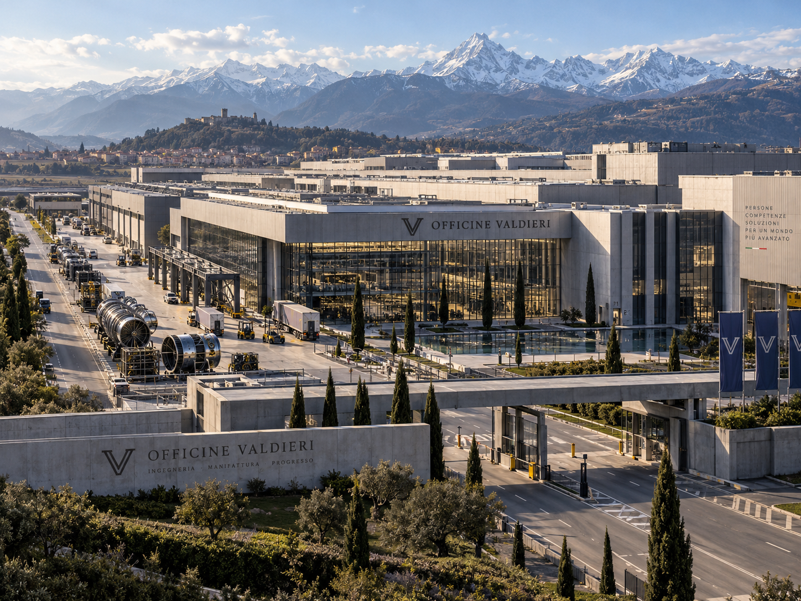
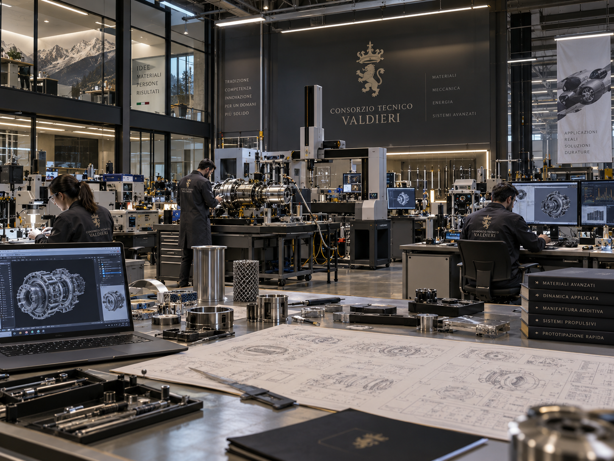

10
Resources, Culture & Household
Principal Great-House net worth · 2026$3.5–5 billion · LOCKED
House Valdieri di Genova · cadet net worth$1–2 billion · LOCKED · separate ownership
House Valdieri di Canavese · cadet net worth$1.5–2.5 billion · LOCKED · separate ownership
Wider controlled/influenced assetsNot yet valued · nonadditive
These are approved approximate US-dollar 2026 net-worth ranges. The principal valuation measures attributable senior-line and sovereign common-House beneficial wealth, excluding independent cadet properties, bound House wealth, outside shareholders and mere influence. Genova and Canavese maintain separate subordinate House balance sheets. Exact asset registers, individual company beneficial equity and debt, and reserved liquidity remain in development. The four estates and named principal/cadet companies and institutions are established, but their detailed book values and boards are not inferred from the headline wealth figures. See the Great-House Wealth Canon and separate principal/cadet ownership model and Valdieri institutional proposals.
Rocca delle Fonti — established principal estate
The ancestral seat is a Piedmontese fortress-palazzo rebuilt in layers, near working land and the Gesso valley, with a central court, preserved stone, later residential and service wings, a functioning constitutional archive and discreet modern security. Its wartime reconstruction matters to the House's historical identity.
Palazzo Valdieri — established Milan headquarters
The senior House's working city headquarters is a restored historic palazzo, combining professional offices, meeting rooms and discreet administrative operations. It is a genuine commercial nerve center, not a substitute for the ancestral seat at Rocca delle Fonti.
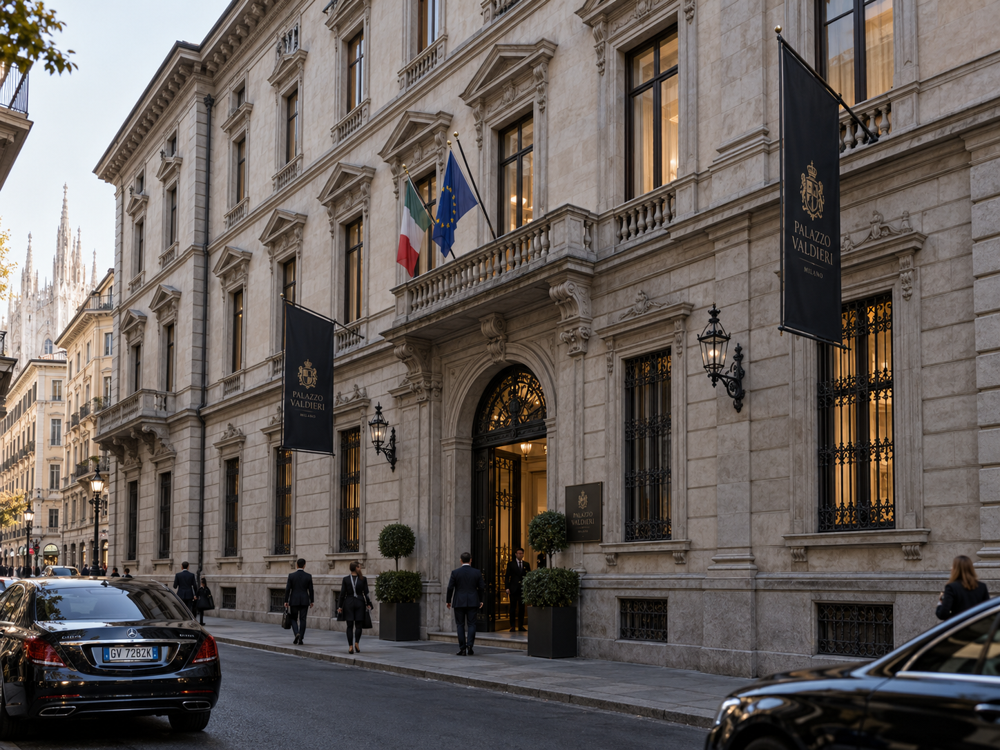
Upbringing and rites
In addition to the Order's wider education, Valdieri heirs could be expected to understand a working enterprise from its shop floor upward, study an actual failure of judgment, negotiate a difficult obligation, and complete a stewardship assignment whose benefit may not appear during their own lifetime. These are candidate family customs only; no named ritual is locked.
11
Strengths & Vulnerabilities
Strengths
Independent patient resources, accurate institutional memory, professional management, the ability to save endangered enterprises, cross-border continuity, legal and financial literacy, and trusted long-term relationships.
Vulnerabilities
Overcomplicated ownership chains, political exposure through industrial assets, difficulty abandoning inherited obligations, dependence on talented non-blood professionals, disputes about acceptable profits, and a history of Council defeat that may distort family judgment.
12
Visual Canon
Approved Batches 1–9 · Complete identified Valdieri visual programVisual archive · All nine batches audited
52 unique source images verified against their canon manifests; all 52 appear on this House page. The six additional image placements are deliberate repeats of the six Batch 1 heraldic/estate/archival visuals. No missing local image or navigation link was found across the House page, Giulia dossier and the nine test pages. Read the final audit and remaining open items.
Identification sheets: Batch 1 · Batch 2 · Batch 3 · Batch 4 · Batch 5 · Batch 6 · Batch 7 · Batch 8 · Batch 9. These retain their approved collage mappings and link to permanent named assets.
Approved House identity
The full heraldic achievement and matching reduced seal in this record are the approved House Valdieri artwork, based on the Alpine Bridge direction. The principal seat, Milan headquarters, House influence map and 1946 archive-reconstruction image are likewise accepted as their canonical depictions. The original six-upload identification mapping is A→5, B→4, C→1, D→6, E→3, F→2. The proposed maxim “What is promised must endure” remains unapproved as a formal motto; no new motto is established by the artwork. The approved family images of Batches 2–4 are joined by Batch 5 portraits of Ferrante and Bellandi, the Council group, the Milan boardroom and the Rocca archive. Batch 6 also locks the five Roccabruna faces, their family group and Villa Roccabruna. Batch 7 separately locks Giorgio, Francesca, Alessandro, Bianca and Enrico Marenesi, their family portrait and Palazzo delle Torri. Batch 8 separately locks the five Lesser-House Heads: Lucia Belmonte, Alberto Serravento, Giovanni Portelivo, Elena Boscariva and Marta Valcerra. The six supporting scenes in Batch 9 are now approved and integrated. This completes the planned nine-batch Valdieri image program.
01 · Full heraldic achievement
Approved primary arms, not a temporary monogram.
02 · Simplified House seal
Approved reduced heraldic mark for navigation and dossiers.
03 · Rocca delle Fonti
Principal seat in the Gesso valley, Piedmont.
04 · Palazzo Valdieri
Established Milan administrative and commercial seat.
05 · Regional influence map
Networks and mandates, not territorial sovereignty.
06 · 1946 archival reconstruction
Interpretive image of institutional continuity after conflict.
Batch 2 — Canonical senior family faces
Five distinct individual portraits and the family group have been accepted as visual canon. Giulia’s approved image here is her Valdieri-family portrait; her Ravenscroft Master B dossier reserves a separate primary portrait for a future Ravenscroft-styled depiction using the same approved face. Upload comparison mapping: A→2, B→4, C→5, D→3, E→1, F→6. Review locked face and asset manifest · View the archived identification page.
Batch 9 — Relationship and supporting institutions
Locked source mapping: A→1, B→2, C→4, D→5, E→3, F→6. Giulia and Elias's couple portrait, Officine industrial facility, Fondazione interior, Roccabruna engineering fieldwork, Consorzio workshop and Marenesi maritime office are all approved. Giulia's original Batch 2 individual face and reserved Master B Ravenscroft-style hero remain unchanged. Decorative incidental crests or historically evocative maritime scenery in supporting art do not replace approved heraldry or define 2026 vessel traffic. Batch 9 locked manifest · approved test page · institutional images.
Batch 8 — Five Lesser-House Heads
Five primary 2026 facial identities are locked from the user-confirmed mapping A→3, B→4, C→2, D→1, E→5. Crucially the labeled collage is 4 = Elena Sofia Boscariva, 5 = Dr. Marta Cecilia Valcerra, superseding the different original list order. Their nonblood natural apparent ages and chartered reporting lines remain unchanged. Batch 8 locked manifest · approved test page · five portraits.
Batch 7 — Major House Marenesi
Five approved individual 2026 faces, the family group and Palazzo delle Torri are locked. Verified mapping: A→7, B→1, C→2, D→3, E→5, F→4, G→6. Marenesi remains a direct nonblood Major subordinate, not a Genova cadet or a dependent of Claudia. Batch 7 locked asset manifest · approved identification test · Marenesi gallery.
Batch 6 — Major House Roccabruna
Five individual portraits, a five-person family scene and Villa Roccabruna are locked as 2026 visual canon. The user-confirmed mapping is A→7, B→6, C→5, D→4, E→1, F→3, G→2. Batch 6 locked manifest · approved test page · Roccabruna gallery.
Batch 5 — Council portraits and interiors
Approved mapping A→1, B→2, C→3, D→5, E→4. Dr. Riccardo Leone Ferrante, Avv. Dr. Teresa Maddalena Bellandi, the seven-seat House Council group, Milan boardroom and Archivio della Rocca records room are now locked. These images do not confer an international Council seat or bloodline status on the appointed officers. Batch 5 canon and asset manifest · approved test page.
Batch 4 — Canavese cadet family and estate
Approved portraits of Tommaso, Lucia and Pietro, their family group and Villa della Rocchetta. Image mapping A→1, B→5, C→3, D→2, E→4. Locked Batch 4 visual canon manifest · approved identification test page.
Batch 3 — Genova cadet family and palace
Three individual portraits, Claudia’s family group and Palazzo di Levante are now locked. Test mapping A→2, B→3, C→5, D→1, E→4. See the locked Batch 3 visual canon · approved test page.
13
Canon Control
EstablishedValdieri formerly held an International Council mandate, lost it to Ravenscroft amid World War era upheaval and a civil war that Ravenscroft covertly exploited, and was formally degraded to Major House after the war. The powerful Monferrato cadet line instigated the succession war and attempted to achieve independent Great-House status; its bloodline was extinguished completely with no surviving descendants, and the principal House absorbed its remaining resources. A surviving cadet branch that backed the rebellion was censured and compelled to pay restitution and place some children in the senior household as ostensibly familial wards and de facto political hostages. The other surviving branch remained neutral or supported the main line. The House regained Great-House recognition in 2023 under Head Lorenzo Vittorio Valdieri (born 1962). It is by far the weakest Great House in 2026, yet possesses full formal peer equality. His consort is Dr. Elena Beatrice Montanari Valdieri (born 1968); their three children are Matteo Lorenzo (born 1996, current heir), Giulia Caterina (born 2004, married Elias Alexander Ravenscroft and renounced her and her descendants' Valdieri succession rights in 2026), and Chiara Elisabetta (born 2008, now second successor). Matteo is an industrial engineer; Elena a physician; Chiara is interested in mathematics, physics and astronomy. Surviving cadet lines are Valdieri di Genova, which supported the rebellion, and Valdieri di Canavese, which initially remained neutral before defending the principal line. The conflict ran 1934–1946, followed by Compact-wide Articles of Dynastic Continuity in 1953–1956.
Developing / Not LockedExact birthdays within established historical birth years, wedding dates, individual assassin identities and victims, Tribunal degradation date, date of Ravenscroft's separate postwar Council election, exact 2023 restoration day, exceptional Council eligibility rules if any, exact property valuations, board memberships and ownership allocations, formal Roccabruna/Marenesi binding dates, exact legal charter instruments, the special constitutional review forum for a dispute involving Lorenzo, detailed subordinate-House asset allocations, additional future narrative and age-progression images outside the completed approved Batches 1–9. The 1934–1946 war leaders, Genova/Canavese alignments, 1922–1930 stewardship reforms and 1953–1956 continuity Articles are now established. Valdieri's Piedmont identity and patient-capital specialization remain developing in finer detail.
2026 Estates, Institutions and Office ChartersRocca delle Fonti in Piedmont is the principal constitutional seat; Palazzo Valdieri in Milan is the commercial seat; Palazzo di Levante is held separately by Genova, and Villa della Rocchetta by Canavese. Established pillars are Compagnia Patrimoniale Valdieri, Officine Valdieri Group (approximately 7–11 operating locations, 2,700–4,000 staff and $1.2–1.9B annual revenue), Fondazione Valdieri per il Patrimonio e le Scienze Applicate, Archivio della Rocca / Ufficio della Continuità, and Consorzio Tecnico Valdieri. The two cadet enterprises are Compagnia di Levante Valdieri and Tecnologie Canavese Valdieri. The Steward of Assets (Riccardo Leone Ferrante) and Warden of Constitutional Continuity (Teresa Maddalena Bellandi) have approved charters and distinct duties. The two bound Major and five Lesser Houses, their separate net-worth bands and the direct-to-Great-House hierarchy are canon. Roccabruna and Marenesi family/seat/business overviews and the 1946–2023 dormant-cadet-rank reconciliation are now approved. Exact geographic sub-boundaries, specialized warrants, exceptional constitutional review forum and formal charter/appointment dates remain open.
Regional Major and Local/Specialist Lesser House CanonMajor-ranked subordinate Houses serve as regional House authorities, and every Major answers directly to the sovereign Great House. Genova and Canavese are blood cadets of Major standing; the separate non-blood Major Houses Roccabruna under Dr. Beatrice Ludovica Roccabruna (b. 1969; $500–800M independent wealth) and Marenesi under Giorgio Pietro Marenesi (b. 1970; $350–650M) likewise answer directly to Lorenzo. Lesser Houses Belmonte d'Orta and Serravento report directly to the Great House; Portelivo reports to Genova; Valcerra and Boscariva to Canavese. Lesser Houses exercise local territorial or professional/industrial mandates, with their own property and independent wealth. The broad regional jurisdictions and Lesser-House functions are locked; detailed charter lines, specialized permits and the exceptional constitutional review forum remain open. Genova and Marenesi have commercial relationships as peers, not a Major-over-Major hierarchy.
2026 Financial CanonPrincipal House Valdieri owns approximately US$3.5–5 billion in attributable net patrimony. The separate subordinate cadet House Valdieri di Genova has US$1–2 billion and House Valdieri di Canavese US$1.5–2.5 billion in independently owned net wealth. Cadet wealth is not included in the parent House total, and wider influence-bearing assets remain unvalued. The names, ownership charts, debts and company financial details supporting these approved ranges remain to be developed.
Modern Cadet Households and CouncilIn 2026 Claudia Renata Valdieri di Genova (born 1964) heads the commercial Genova cadet. Her children are Federico Alessio (born 1992), a medical specialist, and Elisa Beatrice (born 1998), working in historic preservation. Tommaso Enrico Valdieri di Canavese (born 1967) heads the industrial Canavese cadet; his children are Lucia Teresa (born 1995), a materials scientist, and Pietro Davide (born 2001), an ecologist and land-management professional. These two cadet Heads sit on Valdieri's seven-seat Consiglio di Casa alongside Lorenzo, Matteo, Elena, Dr. Riccardo Leone Ferrante (Steward of Assets) and Avv. Dr. Teresa Maddalena Bellandi (Warden of Constitutional Continuity). Names, birth years, relationships, professions, character directions and council membership are established. Modern spouses, precise parental bridges to wartime leaders, and further personal dossiers remain open.
Next decisionsBatches 1–9 are locked and installed: heraldry, primary and cadet families, House Council, bound nonblood Major and Lesser Houses, and relationship/institutional support art. Further images require separate continuity review; Giulia's Ravenscroft-styled Master B hero is still pending. Optional historical work includes exact Tribunal/Council dates, 2023 restoration instruments, charter dates, Conclave delegates and wartime genealogical bridges. The Genova wards’ individual identities remain intentionally unassigned.